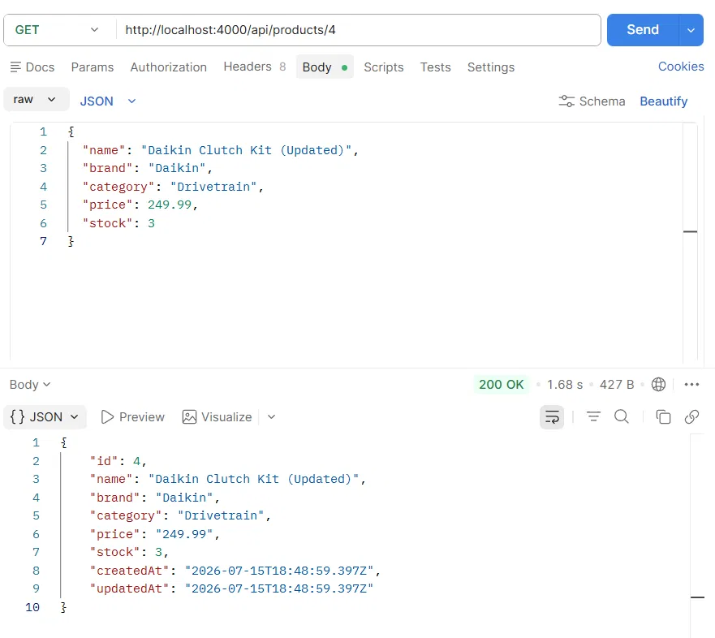
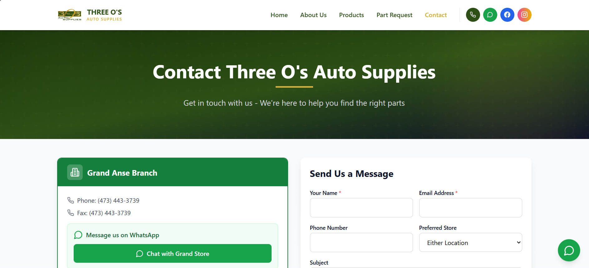

My working experience and the tasks I have completed
Personal API
This is what i did
Built a REST API from scratch for one of my projects, so I had to learn how to design and implement Restful API's,
I also had to learn how to use Postman to test the API and make sure it was working as expected,
I also had to learn how to use JSON to format the data that was being sent and received from the API.
What I Learned
The skills i gained included learning the basic principles of Node.js, Express, and PostgreSQL via using Prisma
and its migrations, i also learnt how relational databases actually work — foreign keys, join tables,
and spotting when something's a relationship rather than a flat field. Lastly I learnt about real
authentication(Hashing,Jason Web Tokens and middleware).

The Fun part of the project.
Three0's Business Website
Building a Website
The task was to create a responsive website for a local business with the aid of two other programmers,
the website had to be built using HTML, CSS, and JavaScript, and had to be functional for both desktop and mobile devices.
and this was my first time working on a project with other people, so I had to learn how to use Github to manage the project.
In the End we were able to complete the project and the website was functional and responsive,
and the client was happy with the result.
What I Learned
Working on this project boosted my proficency in specifically HTML and Javascript as I was proficent in them before
but this project allowed me to learn more about how to use them in a real world scenario encoporating the client's
business rules and requirements into the website's codeframe, I also learnt how to use versional control on Github and
why it's a very important tool for developers when working on projects with other people.

My Favourite Project
Youtube Video
This is a video that I found very helpful in my journey to learn how to build API's, it was very informative and easy to comprehend,
I would recommend it to anyone who is looking to learn how to build API's.